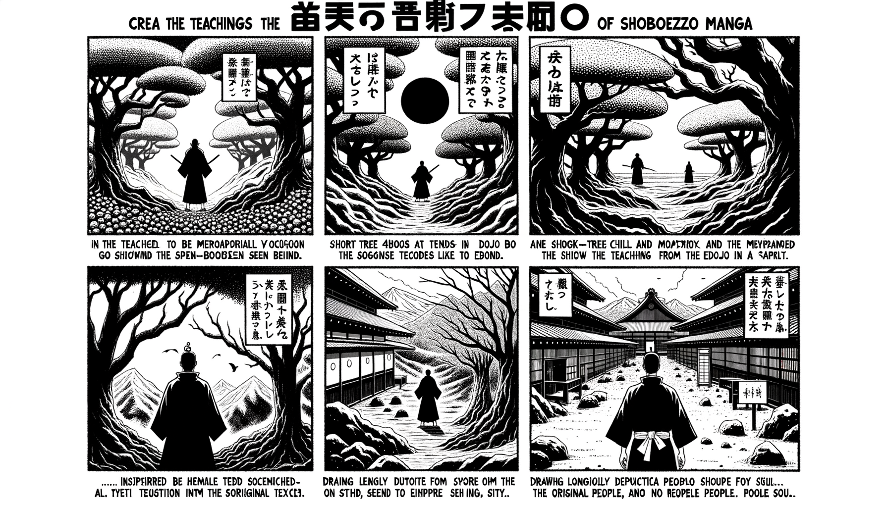

七十五巻 巻一覧
正法眼藏第40 栢樹子
本紹介ページの導入・語彙・深掘り・クイズは tools/regen_volume_intro_from_corpus.py が OpenAI API で生成したものです（入力は当巻の原文からの短い抜粋のみ）。内容はモデル出力のため、重要箇所は必ず原文・教本と照合してください。
出典: https://shomonji.or.jp/zazen/doc/genzou.html
原文・現代語訳の全文は 全文ページを参照してください。
この巻の紹介（導入）
趙州眞際大師は、釋迦如來より第三十七世なり。六十一歳にして、はじめて發心し、いへをいでて學道す。
このときちかひていはく、たとひ百歳なりとも、われよりもおとれらんは、われかれををしふべし。たとひ七歳なりとも、われよりもすぐれば、われかれにとふべし。
語彙の足場
- 趙州眞際大師：釋迦如來から数えて第三十七世の禅僧であり、坐禪を通じて道を探求した。
- 發心：仏道を学ぶことを決意することで、精神的な目覚めを意味する。
- 坐禪：禅宗における瞑想の実践であり、心を静め、自己を見つめる行為。
- 栢樹子：庭前にある栢の木を指し、禅の教えにおいて象徴的な意味を持つ。
- 佛性：すべての存在が持つ仏としての本質を指し、成仏の可能性を示す概念。
原文（要点の抜粋）
当巻の冒頭付近からの短い抜粋です。長い引用は載せていません。 全文は全文ページを参照してください。出典はリポジトリ内 doc/正法眼蔵.txt です。原文の参照元: https://shomonji.or.jp/zazen/doc/genzou.html
趙州眞際大師は、釋迦如來より第三十七世なり。六十一歳にして、はじめて發心し、いへをいでて學道す。このときちかひていはく、たとひ百歳なりとも、われよりもおとれらんは、われかれををしふべし。たとひ七歳なりとも、われよりもすぐれば、われかれにとふべし。恁麼ちかひて、南方へ雲遊す。道をとぶらひゆくちなみに、南泉にいたりて、願和尚を禮拜す。
ちなみに南泉もとより方丈内にありて臥せるついでに、師、來參するにすなはちとふ、近離什麼處（近離什麼れの處ぞ）。
師いはく、瑞像院。
南泉いはく、還見瑞像麼（還た瑞像を見るや）。
師いはく、瑞像卽不見、卽見臥如來（瑞像は卽ち見ず、卽ち臥如來を見る）。
ときに南泉いましに起してとふ、儞はこれ有主沙彌なりや、無主沙彌なりや。
師、對していはく、有主沙彌。
南泉いはく、那箇是儞主。
師いはく、孟春猶寒、伏惟和尚尊體、起居萬福。
南泉すなはち維那をよびていはく、此沙彌別處安排（此の沙彌、別處に安排すべし）。
かくのごとくして南泉に寓直し、さらに餘方にゆかず。辨道功夫すること三十年なり。寸陰をむなしくせず、雜用あることなし。つひに傳道受業よりのち、趙州の觀音院に住することも又三十年なり。その住持の事形、つねの諸方にひとしからず。
或時いはく、
図解（4コマ・AI生成）
教義の根拠は原文・出典に従い、漫画は比喩の補助に留めてください。

深掘り（読解の手掛かり）
- 趙州大師は、南泉和尚に礼拝した際のやり取りが記されている。
- 大師は、坐禪を通じて道を得ることの重要性を強調している。
- 栢樹子の公案は、境にあらざる宗旨を示す重要な教えである。
確認（形成評価）
各設問の下の「採点」で正誤を表示します（ブラウザ内のみ。ログは送りません）。